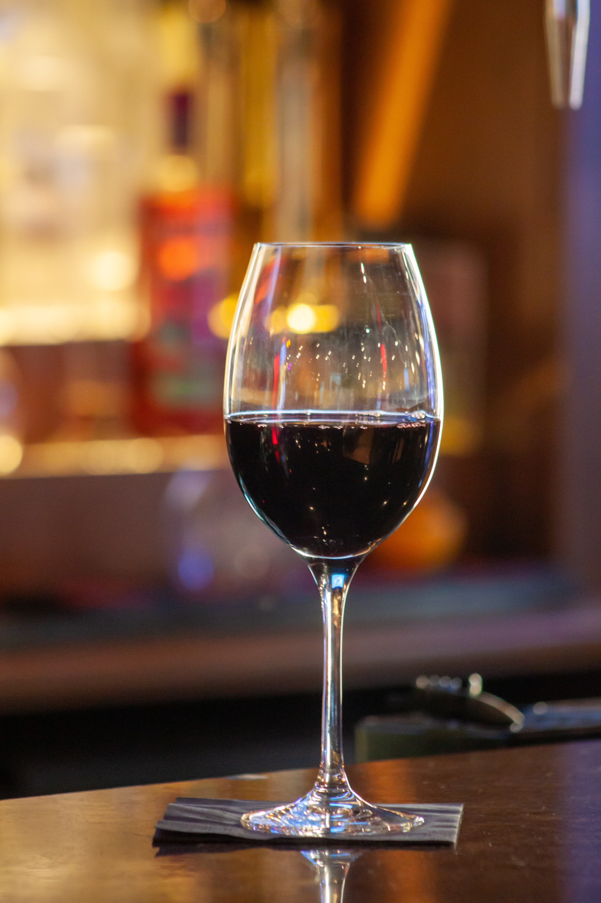
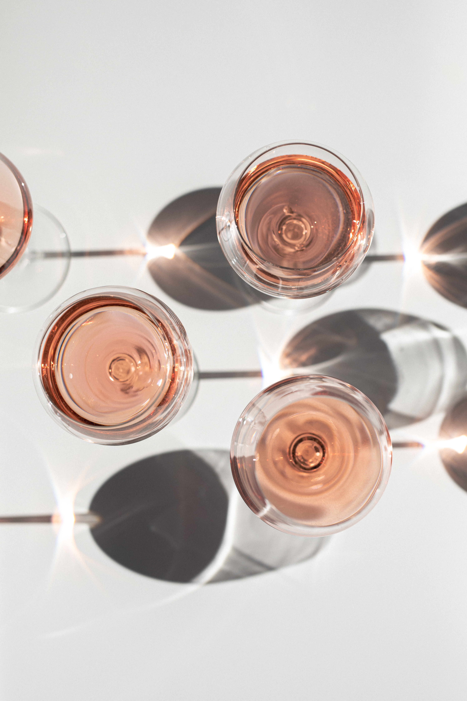

와인의 어원은 라틴어의 비넘(Vinum)으로 포도나무로부터 만든 술이라는 의미이다.
와인은 과실주로서 인간이 만든 최초의 술이며 도수는 주로 9~13도 내외이다.
넓은 의미에서는 과실을 발효시켜 만든 양조주를 말하지만, 일반적으로 포도를 발효시켜 만든 포도주를 의미하며, 우리나라 주세법에서도 과실주의 일종으로 정의한다.
레드와인 : 적포도의 씨와 껍질을 함께 넣어 발효시켜 붉은 색과 떫은 맛이 난다.
화이트와인 : 백포도 혹은 껍질과 씨를 제거한 적포도로 만들어 노란 색과 순하고 상큼한 맛이 난다.
로제와인 : 보통 적포도로 만드는데 레드와인과 비슷하게 만들지만 어느 정도 색이 나오면 껍질을 제거하기 때문데 핑크색이 난다.
스파클링와인 : 스파클링와인은 와인에 2차 발효를 통해 이산화탄소가 녹게 만들거나, 이산화탄소, 탄산가스를 집어넣어 만든 발포와인이다. 샴페인이라고 잘못 불리고 있지만, 샴페인은 프랑스 북부 샹파뉴 지방에서 만들어지는 스파클링와인이다.